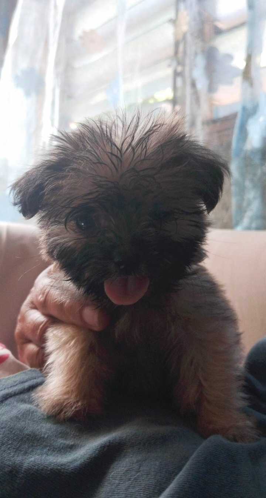

My Profile
Hello! I'm John Lester Jamen Saladores I am 20 years old and currently living in District-3 Barangay Punta. I am a second year BSIT college student at Saint Michael College of Caraga.
THIS IS ME
This picture was taken in November 2021, and I still remember that at that time I was with my best friend in the cemetery to earn a living by painting tombstones and cleaning them.
My Lifestory
ME WHEN I WAS 1 YEAR OLD
This is me carried by my father, taking pictures with my brother's and cousin's
Hobbies
EDITING
Editing is one of my favorite hobbies inside. Because when I'm bored, sometimes one of the things I do is edit.

MY OUTDOOR HOBBY
Every afternoon, I spend time with my dogs, walking them outside and playing with them, because one of the things that relieves my stress is my pets.
Favorites
MY FAVORITE FOOD
This is really my favorite dish when I'm tired and hungry because it's delicious, it's not too expensive to buy, and it tastes even better when I have a boiled egg with my pancit canton. I don't need to eat more rice because I get full quickly when I eat pancit canton and boiled eggs.
Friends
ME AND MY FRIENDS AT THE BEACH
These are my friends in college now who celebrated our classmate's birthday last year